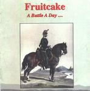

| Artist: | Fruitcake |
| Title: | A Battle A Day... |
| Label: | Cyclops cycl 095 |
| Length(s): | 57 minutes |
| Year(s) of release: | 2001 |
| Month of review: | [02/2002] |
| 1) | Mopery And Dopery In Deep Space | 8.03 |
| 2) | One Night | 3.46 |
| 3) | Reaching Out | 8.19 |
| 4) | Stories One Hears | 5.44 |
| 5) | Water Colours | 6.36 |
| 6) | The Old Man | 8.12 |
| 7) | This Room | 10.02 |
| 8) | Thundercloud | 6.12 |
One Night is a more laid back track, accept for some majestic sounding keyboards. Pretty good.
Reaching Out starts with a strong guitar section with organ and mellotron sounds. This track has sort of an epic feel, opening up instrumentally followed by a vocal part, the track moves into a loosely attached instrumental intermezzo, later returning more clearly to the central theme from the track. Because of the limited amount of vocals this track comes across more strongly.
Stories One Hears opens non-decisively, to move into the vocal part immediately. The track has a bit of an up tempo pop feel to it, something like British eighties bands as The Dream Academy. For the first time the backing vocals of Sorli are clearly audible, on the one hand strenthening my association with the pop groups, enhancing Sovik's vocals on the other. The bridge features those driving organs and keyboard sounds once again. Great as they are, it does start to strike one that there's some room for variation there.
Water Colours starts a bit more intricate than the previous tracks, with a more complex melody, sadly cut short by a vocal section, which is pretty slow and boring at moments, then driving and well supported by a guitar riff at others. The bridge sees the return of the intricate organ melody line. This is the first track leading into some kind of climax, which really helps it along. Despite the sometimes pretty weak vocals, the tracks comes home quite alright.
Haven't I heard The Old Man before? The similarity of construction Fruitcake use in their compositions starts to tell, tracks are to much alike in a way. Only the pretty strong guitar riffing, really taking off later on, several minutes into the track makes it sound actually different from previous tracks. This track doesn't have enough idea to fill its eight minute length.
This Room recycles the previous style elements, driving majestic keyboards, somewhat sharpish sounds at other moments, the vocals coming across pretty strong when the drive is in them, but lame when that's absent. If for its length only, this track is sort of an epic.
Thundercloud puts the style elements in a pretty nice way.
I can very well imagine why people would like the first Fruitcake album they hear the most, finding that I like the first part of the album most already. There are some really strong style elements (used as building blocks) in this album, but music is about more than style elements. Reshuffling of building blocks does not constitute originality, or compositional quality for that matter. Thus the album is more great in some respects, than it is simply great.